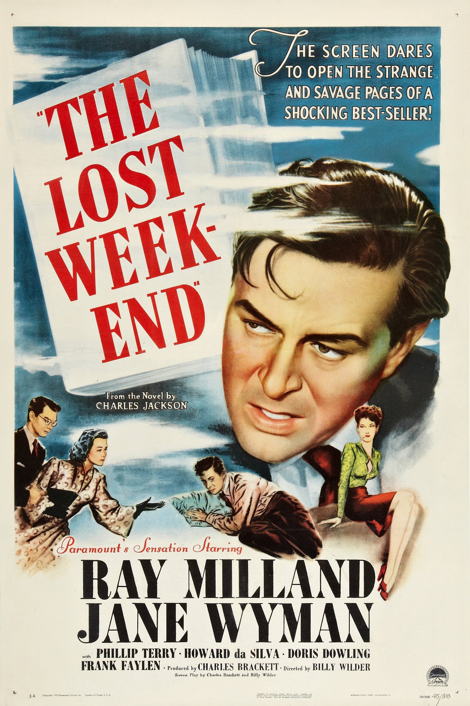

The Lost Weekend
18th Academy Awards
(Oscars 1946)
7 Nominations, 4 Awards
| Nominations | ||
|---|---|---|
| Category | Nominees | Result |
| Best Motion Picture | Paramount | Won |
| Actor | Ray Milland | Won |
| Directing | Billy Wilder | Won |
| Writing (Screenplay) | Billy Wilder and Charles Brackett | Won |
| Cinematography (Black-and-White) | John F. Seitz | Nominated |
| Film Editing | Doane Harrison | Nominated |
| Music (Music Score of a Dramatic or Comedy Picture) | Miklos Rozsa | Nominated |